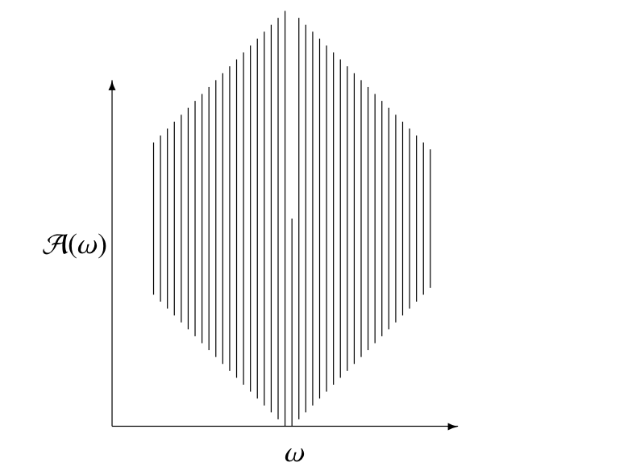
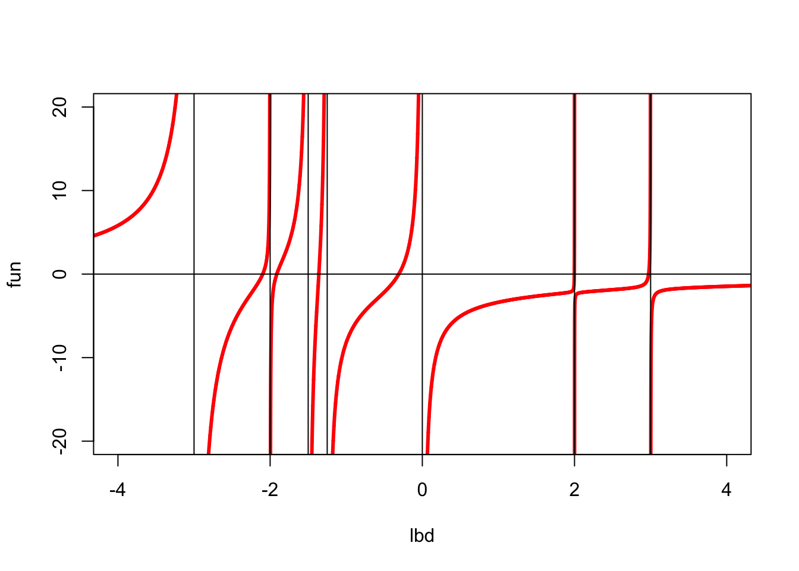
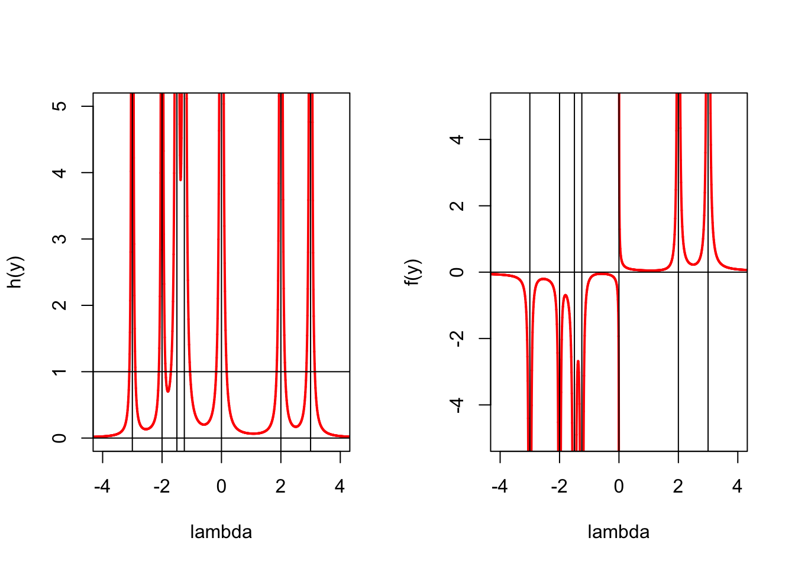
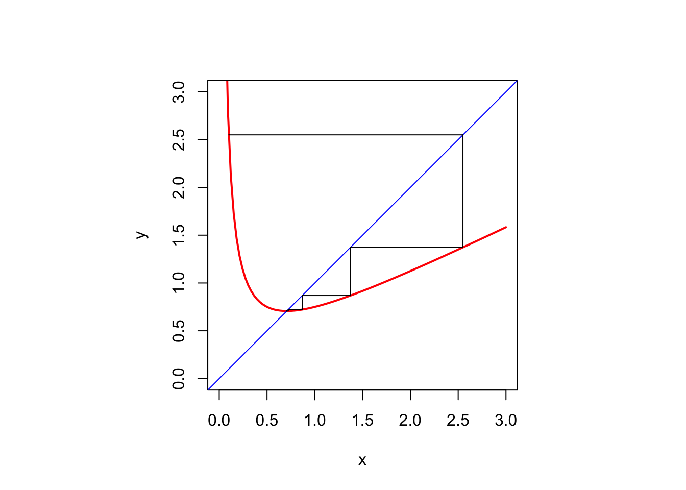

8 Background
8.1 Introduction
8.2 Analysis
###SemiContinuities
The lower limit or limit inferior of a sequence \(\{x_i\}\) is defined as \[ \liminf_{i\rightarrow\infty}x_i=\lim_{i\rightarrow\infty}\left[\inf_{k\geq i} x_k\right]=\sup_{i\geq 0}\left[\inf_{k\geq i} x_k\right]. \] Alternatively, the limit inferior is the smallest cluster point or subsequential limit \[ \liminf_{i\rightarrow\infty}x_i=\min\{y\mid x_{i_\nu}\rightarrow y\}. \] In the same way \[ \limsup_{i\rightarrow\infty}x_i=\lim_{i\rightarrow\infty}\left[\sup_{k\geq i} x_k\right]=\inf_{i\geq 0}\left[\sup_{k\geq i} x_k\right]. \] We always have \[ \inf_i x_i\leq\liminf_{i\rightarrow\infty} x_i\leq\limsup_{i\rightarrow\infty} x_i\leq\sup_i x_i. \] Also if \(\liminf_{i\rightarrow\infty} x_i=\limsup_{i\rightarrow\infty} x_i\) then \[ \lim_{i\rightarrow\infty}x_i=\liminf_{i\rightarrow\infty} x_i=\limsup_{i\rightarrow\infty} x_i. \]The lower limit or limit inferior of a function at a point \(\overline{x}\) is defined as \[ \liminf_{x\rightarrow \overline{x}}f(x)=\sup_{\delta>0}\left[\inf_{x\in\mathcal{B}(\overline{x},\delta)}f(x)\right], \] where \[ \mathcal{B}(\overline{x},\delta)\mathop{=}\limits^{\Delta}\{x\mid\|x-\overline{x}\|\leq\delta\}. \] Alternatively \[ \lim_{i\rightarrow\infty} x_i=\liminf_{x\rightarrow \overline{x}}f(x)=\min\{y\mid x_i\rightarrow \overline{x}\text { and }f(x_i)\rightarrow y\}. \] In the same way \[ \limsup_{x\rightarrow \overline{x}}f(x)=\inf_{\delta>0}\left[\sup_{x\in\mathcal{B}(\overline{x},\delta)}f(x)\right], \]
A function is lower semi-continuous at \(\overline{x}\) if \[ \liminf_{x\rightarrow \overline{x}}f(x)\geq f(\overline{x}) \] Since we always have \(\liminf_{x\rightarrow \overline{x}}f(x)\leq f(\overline{x})\) we can also define lower semicontinuity as \[ \liminf_{x\rightarrow \overline{x}}f(x)=f(\overline{x}). \]
A function is upper semi-continuous at \(\overline{x}\) if \[ \limsup_{x\rightarrow \overline{x}}f(x)= f(\overline{x}). \] We have \[ \liminf_{x\rightarrow \overline{x}}f(x)\leq\limsup_{x\rightarrow \overline{x}}f(x). \] A function is continuous at \(\overline{x}\) if and only if it is both lower semicontinuous and upper semicontinous, i.e. if \[ f(\overline{x})=\lim_{x\rightarrow \overline{x}} f(x)=\liminf_{x\rightarrow \overline{x}}f(x)=\limsup_{x\rightarrow \overline{x}} f(x). \]
###Directional Derivatives
The notation and terminology are by no means standard. We generally follow Demyanov (2010).
The lower Dini directional derivative of \(f\) at \(x\) in the direction \(z\) is \[ \delta^-f(x,z)\mathop{=}\limits^{\Delta}\liminf_{\alpha\downarrow 0}\frac{f(x+\alpha z)-f(x)}{\alpha}=\sup_{\delta>0}\inf_{0<\alpha<\delta}\frac{f(x+\alpha z)-f(x)}{\alpha}. \] and the corresponding upper Dini directional derivative is \[ \delta^+f(x,z)\mathop{=}\limits^{\Delta}\limsup_{\alpha\downarrow 0}\frac{f(x+\alpha z)-f(x)}{\alpha}=\inf_{\delta>0}\sup_{0<\alpha<\delta}\frac{f(x+\alpha z)-f(x)}{\alpha}, \] If \[ \delta f(x,z)=\lim_{\alpha\downarrow 0}\frac{f(x+\alpha z)-f(x)}{\alpha} \] exists, i.e. if \(\delta^+f(x,z)=\delta^-f(x,z)\), then it we simply write \(\delta f(x,z)\) for the Dini directional derivative of \(f\) at \(x\) in the direction \(z\).@penot_13 calls this the radial derivative and Schirotzek (2007) calls it the directional Gateaux derivative. If \(\delta f(x,z)\) exists \(f\) is Dini directionally differentiable at \(x\) in the direction \(z\), and if \(\delta f(x,z)\) exists at \(x\) for all \(z\) we say that \(f\) is Dini directionally differentiable at \(x.\) Delfour (2012) calls \(f\) semidifferentiable at \(x\).
In a similar way we can define the Hadamard lower and upper directional derivatives. They are \[ d^-f(x,z)\mathop{=}\limits^{\Delta}\liminf_{\substack{\alpha\downarrow 0\\u\rightarrow z}}\frac{f(x+\alpha u)-f(x)}{\alpha}= \sup_{\delta>0}\inf_{\substack{u\in\mathcal{B}(z,\delta)\\\alpha\in(0,\delta)}}\frac{f(x+\alpha u)-f(x)}{\alpha}, \] and \[ d^+f(x,z)\mathop{=}\limits^{\Delta}\limsup_{\substack{\alpha\downarrow 0\\u\rightarrow z}}\frac{f(x+\alpha u)-f(x)}{\alpha}= \inf_{\delta>0}\sup_{\substack{u\in\mathcal{B}(z,\delta)\\\alpha\in(0,\delta)}}\frac{f(x+\alpha u)-f(x)}{\alpha}, \] The Hadamard directional derivative \(df(x,z)\) exists if both \(d^+f(x,z)\) and \(d^-f(x,z)\) exist and are equal. In that case \(f\) is Hadamard directionally differentiable at \(x\) in the direction \(z\), and if \(df(x,z)\) exists at \(x\) for all \(z\) we say that \(f\) is Hadamard directionally differentiable at \(x.\)
Generally we have \[ d^-f(x,z)\leq\delta^-f(x,z)\leq\delta^+f(x,z)\leq d^+f(x,z) \]
The classical directional derivative of \(f\) at \(x\) in the direction \(g\) is \[ \Delta f(x,z)\mathop{=}\limits^{\Delta}\lim_{\alpha\rightarrow 0}\frac{f(x+\alpha z)-f(x)}{\alpha}. \] Note that for the absolute value function at zero we have \(\delta f(0,1)=df(0,1)=1\), while \(\Delta f(0,1)=\lim_{\alpha\rightarrow 0}\mathbf{sign}(\alpha)\) does not exist. The classical directional derivative is not particularly useful in the context of optimization problems.
8.2.1 Differentiability and Derivatives
The function \(f\) is Gateaux differentiable at \(x\) if and only if the Dini directional derivative \(\delta f(x,z)\) exists for all \(z\) and is linear in \(z\). Thus \(\delta f(x,z)=G(x)z\)
The function \(f\) is Hadamard differentiable at \(x\) if the Hadamard directional derivative \(df(x,z)\) exists for all \(z\) and is linear in \(z\).
Function \(f\) is locally Lipschitz at \(z\) if there is a ball \(\mathcal{B}(z,\delta)\) and a \(\gamma>0\) such that \(\|f(x)-f(y)|\leq\gamma\|x-y\|\) for all \(x,y\in\mathcal{B}(z,\delta).\)
If \(f\) is locally Lipschitz and Gateaux differentiable then it is Hadamard differentiable.
If the Gateaux derivative of \(f\) is continuous then \(f\) is Frechet differentiable.
Define Frechet differentiable
The function \(f\) is Hadamard differentiable if and only if it is Frechet differentiable.
Gradient, Jacobian
###Taylor’s Theorem
Suppose \(f:\mathcal{X}\rightarrow\mathbb{R}\) is \(p+1\) times continuously differentiable in the open set \(\mathcal{X}\subseteq\mathbb{R}^n\). Define, for all \(0\leq s\leq p\), \[ h_s(x,y)\mathop{=}\limits^{\Delta}\frac{1}{s!}\langle\mathcal{D}^sf(y),(x-y)^{s}\rangle, \] as the inner product of the \(s\)-dimensional array of partial derivatives \(\mathcal{D}^sf(y)\) and the \(s\)-dimensional outer power of \(x-y.\) Both arrays are super-symmetric, and have dimension \(n^s.\) By convention \(h_0(x,y)=f(y)\).
Also define the Taylor Polynomials \[ g_p(x,y)\mathop{=}\limits^{\Delta}\sum_{s=0}^ph_s(x,y) \] and the remainder \[ r_p(x,y)\mathop{=}\limits^{\Delta}f(x)-g_p(x,y). \] Assume \(\mathcal{X}\) contains the line segment with endpoints \(x\) and \(y\). Then Lagrange’s form of the remainder says there is a \(0\leq\lambda\leq 1\) such that \[ r_p(x,y)=\frac{1}{(p+1)!}\langle\mathcal{D}^{p+1}f(x+\lambda(y-x)),(x-y)^{p+1}\rangle, \] and the integral form of the remainder says \[ r_p(x,y)=\frac{1}{p!}\int_0^1(1-\lambda)^p\langle\mathcal{D}^{p+1}f(x+\lambda(y-x)),(x-y)^p\rangle d\lambda. \]
8.2.2 Implicit Functions
The classical implicit function theorem is discussed in all analysis books. I am particularly fond of Spivak (1965). The history of the theorem, and many of its variations, is discussed in Krantz and Parks (2003) and a comprenhensive modern treatment, using the tools of convex and variational analysis, is in Dontchev and Rockafellar (2014).
Suppose \(f:\mathbb{R}^n\otimes\mathbb{R}^m\mapsto\mathbb{R}^m\) is continuously differentiable in an open set containing \((x,y)\) where \(f(x,y)=0.\) Define the \(m\times m\) matrix \[ A(x,y)\mathop{=}\limits^{\Delta}\mathcal{D}_2f(x,y) \] and suppose that \(A(x,y)\) is non-singular. Then there is an open set \(\mathcal{X}\) containing \(x\) and an open set \(\mathcal{Y}\) containing \(y\) such that for every \(x\in\mathcal{X}\) there is a unique \(y(x)\in\mathcal{Y}\) with \(f(x,y(x))=0.\)
The function \(y:\mathbb{R}^n\mapsto\mathbb{R}^m\) is differentiable. If we differentiate \(f(x,y(x))=0\) we find \[ \mathcal{D}_1f(x,y(x))+\mathcal{D}_2(x,f(x))\mathcal{D}y(x), \] and thus \[ \mathcal{D}y(x)=-[\mathcal{D}_2f(x,y(x))]^{-1}\mathcal{D}_1f(x,y(x)). \]
As an example consider the eigenvalue problem \[\begin{align*} A(x)y&=\lambda y,\\ y'y&=1 \end{align*}\] where \(A\) is a function of a real parameter \(x\). Then \[ \begin{bmatrix} A(x)-\lambda I&-x\\ x'&0 \end{bmatrix} \begin{bmatrix} \mathcal{D}y(x)\\ \mathcal{D}\lambda(x) \end{bmatrix} = \begin{bmatrix} -\mathcal{D}A(x)x\\ 0 \end{bmatrix}, \] which works out to \[\begin{align*} \mathcal{D}\lambda(x)&=y(x)'\mathcal{D}A(x)y(x),\\ \mathcal{D}y(x)&=-(A(x)-\lambda(x)I)^+\mathcal{D}A(x)y(x). \end{align*}\]
8.2.3 Necessary and Sufficient Conditions for a Minimum
Directional derivatives can be used to provide simple necessary or sufficient conditions for a minimum (Floudas (2009), propositions 8 and 9).
Result: If \(x\) is a local minimizer of \(f\) then \(\delta^-f(x,z)\geq 0\) and \(d^-f(x,z)\geq 0\) for all directions \(z\). If \(d^-f(x,z)>0\) for all \(z\not= 0\) then \(f\) has a strict local minimum at \(x\).
The special case of a quadratic deserves some separate study, because the quadratic model is so prevalent in optimization. So let us look at \(f(x)=c+b'x+\frac12 x'Ax\), with \(A\) symmetric. Use the eigen-decomposition \(A=K\Lambda K'\) to change variables to \(\tilde x\mathop{=}\limits^{\Delta}K'x\), also using \(\tilde b\mathop{=}\limits^{\Delta}K'b\). Then \(f(\tilde x)=c+\tilde b'\tilde x+\frac12\tilde x'\Lambda\tilde x\), which we can write as \[\begin{align*} f(\tilde x)=\ &c-\frac12\sum_{i\in I_+\cup I_-}\frac{\tilde b_i^2}{\lambda_i}\\ &+\frac12\sum_{i\in I_+}|\lambda_i|(\tilde x_i+\frac{\tilde b_i}{\lambda_i})^2+\\ &-\frac12\sum_{i\in I_-}|\lambda_i|(\tilde x_i+\frac{\tilde b_i}{\lambda_i})^2+\\ &+\sum_{i\in I_0}\tilde b_i\tilde x_i. \end{align*}\] Here \[\begin{align*} I_+&\mathop{=}\limits^{\Delta}\{i\mid\lambda_i>0\},\\ I_-&\mathop{=}\limits^{\Delta}\{i\mid\lambda_i<0\},\\ I_0&\mathop{=}\limits^{\Delta}\{i\mid\lambda_i=0\}. \end{align*}\] * If \(I_-\) is non-empty we have \(\inf_x f(x)=-\infty\). * If \(I_-\) is empty, then \(f\) attains its minimum if and only if \(\tilde b_i=0\) for all \(i\in I_0\). Otherwise again \(\inf_x f(x)=-\infty.\)
If the minimum is attained, then \[ \min_x f(x) = c-\frac12 b'A^+b, \] with \(A^+\) the Moore-Penrose inverse. And the minimum is attained if and only if \(A\) is positive semi-definite and \((I-A^+A)b=0\).
8.3 Point-to-set Maps
###Continuities
8.3.1 Marginal Functions and Solution Maps
Suppose \(f:\mathbb{R}^n\otimes\mathbb{R}^n\rightarrow\mathbb{R}\) and \(g(x)=\min_y f(x,y)\). Suppose the minimum is attained at a unique \(y(x)\), where \(\mathcal{D}_2f(x,y(x))=0.\) Then obviously \(g(x)=f(x,y(x))\). Differentiating \(g\) gives \[ \mathcal{D}g(x)=\mathcal{D}_1f(x,y(x))+\mathcal{D}_2f(x,y(x))\mathcal{D}y(x)=\mathcal{D}_1f(x,y(x)).\tag{1} \]
To differentiate the solution map we need second derivatives of \(f\). Differentiating the implicit definition \(\mathcal{D}_2f(x,y(x))=0\) gives \[ \mathcal{D}_{21}f(x,y(x))+\mathcal{D}_{22}f(x,y(x))\mathcal{D}y(x)=0, \] or \[ \mathcal{D}y(x)=-[\mathcal{D}_{22}f(x,y(x))]^{-1}\mathcal{D}_{21}f(x,y(x)).\tag{2} \] Now combine both \((1)\) and \((2)\) to obtain \[ \mathcal{D}^2g(x)=\mathcal{D}_{11}f(x,y(x))-\mathcal{D}_{12}f(x,y(x))[\mathcal{D}_{22}f(x,y(x))]^{-1}\mathcal{D}_{21}f(x,y(x)).\tag{3} \] We see that if \(\mathcal{D}^2f(x,y(x))\gtrsim 0\) then \(0\lesssim\mathcal{D}^2g(x)\lesssim\mathcal{D}_{11}f(x,y(x))\).Now consider minimization problem with constraints. Suppose \(h_1,\cdots,h_p\) are twice continuously differentiable functions on \(\mathbb{R}^m\), and suppose \[ \mathcal{Y}=\{y\in\mathbb{R}^m\mid h_1(y)=\cdots=h_p(y)=0\}. \] Define \[ g(x)\mathop{=}\limits^{\Delta}\min_{y\in\mathcal{Y}}f(x,y), \] and \[ y(x)\mathop{=}\limits^{\Delta}\mathop{\mathbf{argmin}}\limits_{y\in\mathcal{Y}} f(x,y), \] where again we assume the minimizer is unique and satisfies \[\begin{align*} \mathcal{D}_2f(x,y(x))-\sum_{s=1}^p\lambda_s(x)\mathcal{D}h_s(y(x))&=0,\\ h_s(y(x))&=0. \end{align*}\] Differentiate again, and define \[\begin{align*} A(x)&\mathop{=}\limits^{\Delta}\mathcal{D}_{22}f(x,y(x)),\\ H_s(x)&\mathop{=}\limits^{\Delta}\mathcal{D}^2h_s(y(x)),\\ E(x)&\mathop{=}\limits^{\Delta}-\mathcal{D}_{21}f(x,y(x)),\\ B(x)&\mathop{=}\limits^{\Delta}\mathcal{D}H(y(x)), \end{align*}\] and \[ C(x)\mathop{=}\limits^{\Delta}A(x)-\sum_{s=1}^p\lambda_sH_s(x). \] Then \[ \begin{bmatrix} C(x)&-B(x)\\ B'(x)&0 \end{bmatrix} \begin{bmatrix}\mathcal{D}y(x)\\\mathcal{D}\lambda(x)\end{bmatrix}= \begin{bmatrix}E(x)\\0\end{bmatrix}, \] which leads to \[\begin{align*} \mathcal{D}y(x)&=\left\{I-B(x)\left[B'(x)C^{-1}(x)B(x)\right]^{-1}B'(x)\right\}C^{-1}(x)E(x),\\ \mathcal{D}\lambda(x)&=\left[B'(x)C^{-1}(x)B(x)\right]^{-1}B'(x)C^{-1}(x)E(x). \end{align*}\]
There is an alternative way of arriving at basically the same result. Suppose the manifold \(G(x)=0\) is parametrized locally as \(x=F(w)\). Then \[ y(z)=\mathbf{Arg}\mathop{\mathbf{min}}\limits_{w} f(F(w),z), \] and \(G(F(w))=0\), i.e. \(\mathcal{D}G(F(w))\mathcal{D}F(w)=0\). Let \(h(w,z)=f(F(w),z)\). Then \[ \mathcal{D}y(z)=-[\mathcal{D}_{11}f(F(w(z)),z)]^{-1}\mathcal{D}_{12}h(F(w(z)),z). \] \[ \mathcal{D}_{11}f(F(w(z)),z)=\mathcal{D}_1f\mathcal{D}^2F_i+(\mathcal{D}F)'\mathcal{D}_{11}\mathcal{D}F \]
###Solution Maps
##Basic Inequalities
8.3.2 Jensen’s Inequality
8.3.3 The AM-GM Inequality
The Arithmetic-Geometric Mean Inequality is simple, but quite useful for majorization. For completeness, we give the statement and proof here.
Theorem: If \(x\geq 0\) and \(y\geq 0\) then \(\sqrt{xy}\leq\frac{1}{2}(x+y),\) with equality if and only if \(x=y.\)
Proof: Expand \((\sqrt{x}-\sqrt{y})^2\geq 0,\) and collect terms. QED
Corollary: \(\mid xy\mid\leq\frac{1}{2}(x^2+y^2)\)
Proof: Just a simple rewrite of the theorem. QED
###Polar Norms and the Cauchy-Schwarz Inequality
Theorem: Suppose \(x,y\in\mathbb{R}^n.\) Then \((x'y)^2\leq x'x.y'y,\) with equality if and only if \(x\) and \(y\) are proportional.
Proof: The result is trivially true if either \(x\) or \(y\) is zero. Thus we suppose both are non-zero. We have \(h(\lambda)\mathop{=}\limits^{\Delta}(x-\lambda y)'(x-\lambda y)\geq 0\) for all \(\lambda.\) Thus \[ \min_\lambda h(\lambda)=x'x-\frac{(x'y)^2}{y'y}\geq 0, \] which is the required result. QED
8.3.4 Young’s Inequality
The AM-GM inequality is a very special cases of Young’s inequality. We derive it in a general form, using the coupling functions introduced by Moreau. Suppose \(f\) is a real-valued function on \(\mathcal{X}\) and \(g\) is a real-valued function on \(\mathcal{X}\times\mathcal{Y}\), called the coupling function. Here \(\mathcal{X}\) and \(\mathcal{Y}\) are arbitrary. Define the \(g\)-conjugate of \(f\) by \[ f^\circ_g(y)\mathop{=}\limits^{\Delta}\sup_{x\in\mathcal{X}}\ \{g(x,y)-f(x)\} \] Then \(g(x,y)-f(x)\leq f^\circ_g(y)\) and thus \(g(x,y)\leq f(x)+f^\circ_g(y)\), which is the generalized Young’s inequality. We can also write this in the form that directly suggests minorization \[ f(x)\geq f^\circ_g(y)+g(x,y). \]
The classical coupling function is \(g(x,y)=xy\) with both \(x\) and \(y\) in the positive reals. If we take \(f(x)=\frac{1}{p}x^p\), with \(p>1\), then \[ f^\circ_g(y)=\sup_{x}\ \{xy-\frac{1}{p}x^p\}. \] The \(\sup\) is attained for \(x=y^{\frac{1}{p-1}}\), from which we find \(f^\circ_g(y)=\frac{1}{q}y^q,\) with \(q\mathop{=}\limits^{\Delta}\frac{p}{p-1}\).
Thus if \(p,q>1\) such that \[ \frac{1}{p}+\frac{1}{q}=1. \] Then for all \(x,y>0\) we have \[ xy\leq\frac{x^p}{p}+\frac{y^q}{q}, \] with equality if and only if \(y=x^{p-1}\).
8.4 Fixed Point Problems and Methods
As we have emphasized before, the algorithms discussed in this books are all special cases of block relation methods. But block relation methods are often appropriately analyzed as fixed point methods, which define an even wider class of iterative methods. Thus we will not discuss actual fixed point algorithms that are not block relation methods, but we will use general results on fixed point methods to analyze block relaxation methods.
A (stationary, one-step) fixed point method on \(\mathcal{X}\subseteq\mathbb{R}^n\) is defined as a map \(A:\mathcal{X}\rightarrow\mathcal{X}\). Depending on the context we refer to \(A\) as the update map or algorithmic map. Iterative sequences are generated by starting with \(x^{(0)}\in\mathcal{X}\) and then setting \[ x^{(k)}=A(x^{(k-1)})=A^k(x^{(0)}). \] for \(k=1,2,\cdots\). Such a sequence is also called the Picard sequence generated by the map.
If the sequence \(x^{(k)}\) converges to, say, \(x_\infty\), and if \(A\) is continuous, then \(x_\infty=A(x_\infty)\), and thus \(x_\infty\) is a fixed point of \(A\) on \(\mathcal{X}\). The set of all \(x\in\mathcal{X}\) such that \(x=A(x)\) is called the fixed point set of \(A\) on \(\mathcal{X}\), and is written as \(\mathcal{F}_\mathcal{X}\).
The literature on fixed point methods is truly gigantic. There are textbooks, conferences, and dedicated journals. A nice and compact treatment, mostly on existence theorems for fixed points, is Smart (1974). An excellent modern overview, concentrating on metrical fixed point theory and iterative computation, is Berinde (2007).
The first key result in fixed point theory is the Brouwer Fixed Point Theorem, which says that for compact convex \(\mathcal{X}\) and continuous \(A\) there is at least one \(x\in\mathcal{F}_\mathcal{X}(A)\). The second is the Banach Fixed Point Theorem, which says that if \(\mathcal{X}\) is a non-empty complete metric space and \(A\) is a contraction, i.e. \(d(A(x),A(y))<\kappa\ d(x,y)\) for some \(0\leq\kappa<1\), then the Picard sequence \(x^{(k)}\) converges from any starting point \(x^{(0)}\) to the unique fixed point of \(A\) in \(\mathcal{X}\).
Much of the fixed point literature is concerned with relaxing the contraction assumption and choosing more general spaces on which the various mappings are defined. I shall discuss some of the generalizations that we will use later in this book.
First, we can generalize to point-to-set maps \(A:\mathcal{X}\rightarrow 2^\mathcal{X}\), where \(2^\mathcal{X}\) is the power set of \(\mathcal{X}\), i.e. the set of all subsets. Point-to-set maps are also called correspondences or multivalued maps. The Picard sequence is now defined by \(x^{(k)}\in A(x^{(k-1)})\) and we have a fixed point \(x\in\mathcal{F}_\mathcal{X}(A)\) if and only if \(x\in A(x)\). The generalization of the Brouwer Fixed Point Theorem is the Kakutani Fixed Point Theorem. It assumes that \(\mathcal{X}\) is non-empty, compact and convex and that \(A(x)\) is non-empty and convex for each \(x\in\mathcal{X}\). In addition, the map \(A\) must be closed or upper semi-continuous on \(\mathcal{X}\), i.e. whenever \(x_n\rightarrow x_\infty\) and \(y_n\in A(x_n)\) and \(y_n\rightarrow y_\infty\) we have \(y_\infty\in A(x_\infty)\). Under these conditions Kakutani’s Theorem asserts the existence of a fixed point.
Our discussion of the global convergence of block relaxation algorithms, in a later chapter, will be framed using fixed points of point-to-set maps, assuming the closedness of maps.
In another generalization of iterative algorithms we get rid of the one-step and the stationary assumptions. The iterative sequence is \[ x^{(k)}\in A_k(x^{(0)},x^{(1)},\cdots,x^{(k-1)}). \] Thus the iterations have perfect memory, and the update map can change in each iteration. In an \(\ell\)-step method, memory is less than perfect, because the update is a function of only the previous \(\ell\) elements in the sequence. Formally, for \(k\geq\ell\), \[ x^{(k)}\in A_k(x^{(k-l)},\cdots,x^{(k-1)}), \] with some special provisions for \(k<\ell\).
Any \(\ell\)-step method on \(\mathcal{X}\) can be rewritten as a one-step method on \[ \underbrace{\mathcal{X}\otimes\mathcal{X}\otimes\cdots\otimes\mathcal{X}}_{\ell\ \text{times}}. \] This makes it possible to limit our discussion to one-step methods. In fact, we will mostly discuss block-relaxation methods which are stationary one-step fixed point methods.
For non-stationary methods it is somewhat more complicated to define fixed points. In that case it is natural to define a set \(\mathcal{S}\subseteq\mathcal{X}\) of desirable points or targets, which for stationary algorithms will generally, but not necessarily, coincide with the fixed points of \(A\). The questions we will then have to answer are if and under what conditions our algorithms converge to desirable points, and if they converge how fast the convergence will take place.
8.4.1 Subsequential Limits
##Convex Functions
##Composition
8.4.2 Differentiable Convex Functions
If a function \(f\) attains its minimum on a convex set \(\mathcal{X}\) at \(x\), and \(f\) is differentiable at \(x\), then \((x-y)'\mathcal{D}f(x)\geq 0\) for all \(y\in\mathcal{X}\).
If \(f\) attains its minimum on \([a,b]\) at \(a\), and \(f\) is differentiable at \(a\), then \(f'(a)\geq 0\). Or, more precisely, if \(f\) is differentiable from the right at \(a\) and \(f'_R(a)\geq 0\).
Suppose \(\mathcal{X}=\{x\mid x'x\leq 1\}\) is the unit ball and a differentiable \(f\) attains its a minimum at \(x\) with \(x'x=1.\) Then \((x-y)'\mathcal{D}f(x)\geq 0\) for all \(y\in\mathcal{X}.\) This is true if and only if \[\begin{align*} \min_{y\in\mathcal{X}}(x-y)'\mathcal{D}f(x)&= x'\mathcal{D}f(x)-\max_{y\in\mathcal{X}}y'\mathcal{D}F(x)=\\&=x'\mathcal{D}f(x)-\|\mathcal{D}f(x)\|=0. \end{align*}\] By Cauchy-Schwartz this means that \(\mathcal{D}f(x)=\lambda x\), with \(\lambda= x'\mathcal{D}f(x)=\|\mathcal{D}f(x)\|.\)
As an aside, if a differentiable function \(f\) attains its minimum on the unit sphere \(\{x\mid x'x=1\}\) at \(x\) then \(f(x/\|x\||)\) attains is minimum over \(\mathbb{R}^n\) at \(x\). Setting the derivative equal to zero shows that we must have \(\mathcal{D}f(x)(I-xx')=0\), which again translates to \(\mathcal{D}f(x)=\lambda x\), with \(\lambda= x'\mathcal{D}f(x)=\|\mathcal{D}f(x)\|.\)
##Zangwill Theory
8.4.3 Algorithms as Point-to-set Maps
The theory studies iterative algorithms with the following properties. An algorithm works in a space \(\Omega.\) It consists of a triple \((\mathcal{A},\psi,\mathcal{P}),\) with \(\mathcal{A}\) a mapping of \(\Omega\) into the set of nonempty subsets of \(\Omega,\) with \(\psi\) a real-valued function on \(\Omega,\) and with \(\mathcal{P}\) a subset of \(\Omega.\) We call \(\mathcal{A}\) the algorithmic map or the update, \(\psi\) the evaluation function and \(\mathcal{P}\) the desirable points.
The algorithm works as follows.
- start at an arbitrary \(\omega^{(0)}\in\Omega,\)
- if \(\omega^{(k)}\in\mathcal{P},\) then we stop,
- otherwise we construct the successor by the rule \(\omega^{(k+1)}\in\mathcal{A}(\omega^k).\)
We study properties of the sequences \(\omega^{(k)}\) generated by the algorithm, in particular their convergence.
8.4.4 Convergence of Function Values
For this method we have our first (rather trivial) convergence theorem.
Theorem: If * \(\Omega\) is compact, * \(\psi\) is jointly continuous on \(\Omega\),
then
- The sequence \(\{\psi^{(k)}\}\) converges to, say, \(\psi^\infty,\)
- the sequence \(\{\omega^{(k)}\}\) has at least one convergent subsequence,
- if \(\omega^\infty\) is an accumulation point of \(\{\omega^{(k)}\},\) then \(\psi(\omega^\infty)=\psi^\infty.\)
Proof: Compactness and continuity imply that \(\psi\) is bounded below on \(\Omega,\) and the minima in each of the substeps exist. This means that \(\{\psi^{(k)}\}\) is nonincreasing and bounded below, and thus convergent. Existence of convergent subsequences is guaranteed by Bolzano-Weierstrass, and if we have a subsequence \(\{\omega^{(k)}\}_{k\in\mathcal{K}}\) converging to \(\omega^\infty\) then by continuity \(\{\psi(\omega^{(k)})\}_{k\in\mathcal{K}}\) converges to \(\psi(\omega^\infty).\) But all subsequences of a convergent sequence converge to the same point, and thus \(\psi(\omega^\infty)=\psi^\infty.\) QED
Remark: The assumptions in the theorem can be relaxed. Continuity is not necessary. Think of the function \(\psi(x)=\sum_{s=1}^p\text{sign}(x_s),\) which clearly is minimized in a single cycle. Typically, however, statistical problems exhibit continuity, so it may not be worthwhile to actually relax the assumption.
Compactness is more interesting. If we define the level sets \[ \Omega_0\mathop{=}\limits^{\Delta}\{\omega\in\Omega\mid\psi(\omega)\leq\psi^{(0)}\}, \] then obviously it is sufficient to assume that \(\Omega_0\) is compact. The same thing is true for the even weaker assumption that the iterates \(\omega^{(k)}\) are in a compact set.
We do not assume the sets \(\Omega_s\) are connected, i.e. they could be discrete. For instance, we could minimize \(\|X\beta-y-\delta\|^2\) over \(\beta\) and \(\delta\), under the constraint that the elements of \(\delta\) take only two different unspecified values. This is not difficult to do with block-relaxation, but generally problems with discrete characteristics present us with special problems and complications. Thus, in most instances, we have connected sets in mind. For discrete components, the usual topology of \(\mathbb{R}^s\) may not be the most natural one to study convergence.
In several problems in statistics the sets \(\Omega_s\) can be infinite-dimensional. This is true, for instance, in much of semi-parametric and non-parametric statistics. We mostly ignore the complications arising from infinite dimensionality (again, of a topological nature), because in actual computations we work with finite-dimensional approximations anyway.
Theorem is very general, but the conclusions are quite weak. We have convergence of the function values, but about the sequence \(\{\omega^{(k)}\}\) we only know that it has one or more accumulation points, and that all accumulation points have the same function value. We have not established other desirable properties of these accumulation points.
In order to prove global convergence (i.e. convergence from any initial point) we use the general theory developed initially by Zangwill (1969) (and later by Polak (1969), R. R. Meyer (1976), G. G. L. Meyer (1975), and others). The best introduction and overview is perhaps the volume edited by Huard ((Ed) (1979)).
8.4.5 Convergence of Solutions
Theorem: [Zangwill]
- If \(\mathcal{A}\) is uniformly compact on \(\Omega,\) i.e. there is a compact \(\Omega_0\subseteq\Omega\) such that \(\mathcal{A}(\omega)\subseteq\Omega_0\) for all \(\omega\in\Omega,\)
- If \(\mathcal{A}\) is upper-semicontinuous or closed on \(\Omega-\mathcal{P},\) i.e. if \(\xi_i\in\mathcal{A}(\omega_i)\) and \(\xi_i\rightarrow\xi\) and \(\omega_i\rightarrow\omega\) then \(\xi\in\mathcal{A}(\omega),\)
- If \(\mathcal{A}\) is strictly monotonic on \(\Omega-\mathcal{P}\), i.e. \(\xi\in\mathcal{A}(\omega)\) implies \(\psi(\xi)\) < \(\psi(\omega)\) if \(\omega\) is not a desirable point. then all accumulation points of the sequence \(\{\omega^{(k)}\}\) generated by the algorithm are desirable points.
Proof: Compactness implies that \(\{\omega^{(k)}\}\) has a convergent subsequence. Suppose its index-set is \(\mathcal{K}=\{k_1,k_2,\cdots\}\) and that it converges to \(\omega_\mathcal{K}.\) Since \(\{\psi(\omega^{(k)})\}\) converges to, say \(\psi_\infty,\) we see that also \[ \{\psi(\omega^{(k_1)}),\psi(\omega^{(k_2)}),\cdots\} \rightarrow\psi_\infty. \] Now consider \(\{\omega^{(k_1+1)},\omega^{(k_2+1)},\cdots\},\) which must again have a convergent subsequence. Suppose its index-set is \(\mathcal{L}=\{\ell_1+1,\ell_2+1,\cdots\}\) and that it converges to \(\omega_\mathcal{L}.\) Then \(\psi(\omega_\mathcal{K})=\psi_(\omega_\mathcal{L})=\psi_\infty.\)
Assume \(\omega_\mathcal{K}\) is not a fixed point. Now \[ \{\omega^{(\ell_1)},\omega^{(\ell_2)},\cdots\} \rightarrow \omega_\mathcal{K} \] and \[ \{\omega^{(\ell_1+1)},\omega^{(\ell_2+1)},\cdots\} \rightarrow\omega_\mathcal{L}, \] with \(\omega^{(\ell_j+1)}\in\mathcal{A}(\omega^{(\ell_j+1)}.\) Thus, by usc, \(\omega_\mathcal{L}\in\mathcal{A}(\omega_\mathcal{K}).\) If \(\omega_\mathcal{K}\) is not a fixed point, then strict monotonicity gives gives \(\psi(\omega_\mathcal{L})\) < \(\psi(\omega_\mathcal{K}),\) which contradicts our earlier \(\psi(\omega_\mathcal{K})=\psi_(\omega_\mathcal{L}).\) QED
The concept of closedness of a map can be illustrated with the following picture, showing a map which is not closed at at least one point.

Figure 8.1: The map is not closed
We have already seen another example: Powell’s coordinate descent example shows that the algorithm map is not closed at six of the edges of the cube \(\{\pm 1,\pm 1,\pm 1\}.\)
It is easy to see that desirable points are generalized fixed points, in the sense that \(\omega\in\mathcal{P}\) is equivalent to that \(\omega\in\mathcal{A}(\omega).\) According to Zangwill’s theorem each accumulation point is a generalized fixed point. This, however, does not prove convergence, because there can be many accumulation points. If we redefine fixed points as points such that \(\mathcal{A}(\omega)=\{\omega\},\) then we can strengthen the theorem [Meyer, 1976].
Theorem: [Meyer] Suppose the conditions of Zangwill’s theorem are satisfied for the stronger definition of a fixed point, i.e. \(\xi\in\mathcal{A}(\omega)\) implies \(\psi(\xi)\) < \(\psi(\omega)\) if \(\omega\) is not a fixed point, then in addition to what we had before \(\{\omega^{(k)}\}\) is asymptotically regular, i.e. \(\|\omega^{(k)}-\omega^{(k+1)}\|\rightarrow 0.\)
Proof: Use the notation in the proof of Zangwill’s theorem. Suppose \(\|\omega^{(\ell_i+1)}-\omega^{(\ell_i)}\|\) > \(\delta\) > \(0.\) Then \(\|\omega_\mathcal{L}-\omega_\mathcal{K}\|\geq\delta.\) But \(\omega_\mathcal{K}\) is a fixed point (in the strong sense) and thus \(\omega_\mathcal{L}\in\mathcal{A}(\omega_\mathcal{K})=\{\omega_\mathcal{K}\},\) a contradiction. QED
Theorem: [Ostrowski] If the bounded sequence \(\Omega=\{\omega^{(k)}\}\) satisfies \(\|\omega^{(k)}-\omega^{(k+1)}\|\rightarrow 0,\) then the derived set \(\Omega'\) is either a point or a continuum.
Proof: We follow Ostrowski [1966, pages 203–204]. A continuum is a closed set, which is not the union of two or more disjoint closed sets. Of course the derived set is closed. Suppose it is the union of the disjoint closed sets \(C_1\) and \(C_2,\) which are a distance of at least \(p\) apart. We can choose \(k_0\) such that \(\|\omega^{(k)}-\omega^{(k+1)}\|\leq\frac{p}{3}\) for all \(k\geq k_0.\) QED
Only if the derived set is a single point, we have actual convergence. Thus Meyer’s theorem still does not prove actual convergence, but it is close enough for all practical purposes. Observe boundedness is essential in Theorem , otherwise the derived set may be empty, think of the series \(\sum\frac{1}{k}.\)
8.5 Rates of Convergence
The basic result we use is due to Perron and Ostrowski (1966).
Theorem: * If the iterative algorithm \(x^{(k+1)}=\mathcal{A}(x^{(k)}),\) converges to \(x_\infty,\) * and \(\mathcal{A}\) is differentiable at \(x_\infty,\) * and \(0<\rho=\|\mathcal{D}\mathcal{A}(\omega_\infty)\|<1,\)
then the algorithm is linearly convergent with rate \(\rho.\)
Proof:
QED
The norm in the theorem is the spectral norm, i.e. the modulus of the maximum eigenvalue. Let us call the derivative of \(A\) the iteration matrix and write it as \(\mathcal{M}.\) In general block relaxation methods have linear convergence, and the linear convergence can be quite slow. In cases where the accumulation points are a continuum we have sublinear rates. The same things can be true if the local minimum is not strict, or if we are converging to a saddle point.
Generalization to non-differentiable maps.
Points of attraction and repulsion.
Superlinear etc
8.5.1 Over- and Under-Relaxation
8.5.2 Acceleration of Convergence of Fixed Point Methods
8.6 Matrix Algebra
8.6.1 Eigenvalues and Eigenvectors of Symmetric Matrices
In this section we give a fairly complete introduction to eigenvalue problems and generalized eigenvalue problems. We use a constructive variational approach, basically using the Rayleigh quotient and deflation. This works best for positive semi-definite matrices, but after dealing with those we discuss several generalizations.
Suppose \(A\) is a positive semi-definite matrix of order \(n\). Consider the problem of maximizing the quadratic form \(f(x)=x'Ax\) on the sphere \(x'x=1\). At the maximum, which is always attained, we have \(Ax=\lambda x\), with \(\lambda\) a Lagrange multiplier, as well as \(x'x=1\). It follows that \(\lambda=f(x)\). Note that the maximum is not necessarily attained at a unique value. Also the maximum is zero if and only if \(A\) is zero.
Any pair \((x,\lambda)\) such that \(Ax=\lambda x\) and \(x'x=1\) is called an eigen-pair of \(A\). The members of pair are the eigenvector \(x\) and the corresponding eigenvalue \(\lambda\).
Result 1: Suppose \((x_1,\lambda_1)\) and \((x_2,\lambda_2)\) are two eigen-pairs, with \(\lambda_1\not=\lambda_2.\) Then premultiplying both sides of \(Ax_2=\lambda_2x_2\) by \(x_1'\) gives \(\lambda_1x_1'x_2=\lambda_2x_1'x_2\), and thus \(x_1'x_2=0\). This shows that \(A\) cannot have more than \(n\) distinct eigenvalues. If there were \(p>n\) distinct eigenvalues, then the \(n\times p\) matrix \(X\), which has the corresponding eigenvectors as columns, would have column-rank \(p\) and row-rank \(n\), which is impossible. In words: one cannot have more than \(n\) orthonormal vectors in \(n-\)dimensional space. Suppose the distinct values are \(\tilde\lambda_1>\cdots>\tilde\lambda_s\), with \(s=1,\cdots,p.\) Thus each of the eigenvalues \(\lambda_i\) is equal to one of the \(\tilde\lambda_s.\)
Result 2: If \((x_1,\lambda)\) and \((x_2,\lambda)\) are two eigen-pairs with the same eigenvalue \(\lambda\) then any linear combination \(\alpha x_1+\beta x_2,\) suitably normalized, is also an eigenvector with eigenvalue \(\lambda\). Thus the eigenvectors corresponding with an eigenvalue \(\lambda\) form a linear subspace of \(\mathbb{R}^n\), with dimension, say, \(1\leq n_s\leq n\). This subspace can be given an orthonormal basis in an \(n\times n_s\) matrix \(X_s\). The number \(n_s\) is the multiplicity of \(\tilde\lambda_s,\) and by implication of the eigenvalue \(\lambda_i\) equal to \(\tilde\lambda_s\).
Of course these results are only useful if eigen-pairs exist. We have shown that at least one eigen-pair exists, the one corresponding to the maximum of \(f\) on the sphere. We now give a procedure to compute additonal eigen-pairs.
Consider the following algorithm for generating a sequence \(A^{(k)}\) of matrices. We start with \(k=1\) and \(A^{(1)}=A\). 1. Test: If \(A^{(k)}=0\) stop. 2. Maximize: Computes the maximum of \(x'A^{(k)}x\) over \(x'x=1\). Suppose this is attained at an eigen-pair \((x^{(k)},\lambda^{(k)})\). If the maximizer is not unique, select an arbitrary one. 3. Orthogonalize: Replace \(x^{(k)}\) by \(x^{(k)}-\sum_{\ell=1}^{k-1}((x^{(\ell)})'x^{(k)})x^{(\ell)}.\) 4. Deflate: Set \(A^{(k+1)}=A^{(k)}-\lambda^{(k)}x^{(k)}(x^{(k)})'\), 5. Update: Go back to step 1 with \(k\) replaced by \(k+1\).
If \(k=1\) then in step (2) we compute the largest eigenvalue of \(A\) and a corresponding eigenvector. In that case there is no step (3). Step (4) constructs \(A^{(2)}\) by deflation, which basically removes the contribution of the largest eigenvalue and corresponding eigenvector. If \(x\) is an eigenvector of \(A\) with eigenvalue \(\lambda<\lambda^{(1)}\), then \[ A^{(2)}x=Ax-\lambda^{(1)}x^{(1)}(x^{(1)})'x=Ax=\lambda x \] by result (1) above. Also, of course, \(A^{(2)}x^{(1)}=0\), so \(x^{(1)}\) is an eigenvector of \(A^{(2)}\) with eigenvalue \(0\). If \(x\not= x^{(1)}\) is an eigenvector of \(A\) with eigenvalue \(\lambda=\lambda^{(1)}\), then by result (2) we can choose \(x\) such that \(x'x^{(1)}=0,\) and thus \[ A^{(2)}x=Ax-\lambda x^{(1)}(x^{(1)})'x=\lambda(I-x^{(1)}(x^{(1)})')x=\lambda x. \] We see that \(A^{(2)}\) has the same eigenvectors as \(A\), with the same multiplicities, except for \(\lambda^{(1)}\), which now has its old multiplicity \(-1\), and zero, which now has its old multiplicity \(+1\). Now if \(x^{(2)}\) is the eigenvector corresponding with \(\lambda^{(2)}\), the largest eigenvalue of \(A^{(2)}\), then by result (1) \(x^{(2)}\) is automatically orthogonal to \(x^{(1)}\), which is an eigenvalue of \(A^{(2)}\) with eigenvalue zero. Thus step (3) is not ever necessary, although it will lead to more precise numerical computation.
Following the steps of the algorithm we see thatit defines \(p\) orthonormal matrices \(X_s\), which moreover satisfy \(X_s'X_t=0\) for \(s\not= t\), and with \(\sum_{s=1}^p n_s=\mathbf{rank}(A)\). Also \[ A=\sum_{s=1}^p \tilde\lambda_sP_s,\tag{1a} \] where \(P_s\) is the projector \(X_sX_s'\). This is the eigen decomposition or the spectral decomposition of a positive semi-definite \(A\).
Our algorithm stops when \(A^{(k)}=0\), which is the same as \(\sum_{s=1}^p n_s=\mathbf{rank}(A)\). If \(\mathbf{rank}(A)<n\) then the minimum eigenvalue is zero, and has multiplicity \(n-\mathbf{rank}(A)\). \(P_s=I-P_1-\cdots-P_{s-1}=X_sX_s'\) is the orthogonal projector of the null-space of \(A\), with \(\mathbf{rank}(Q)=\mathbf{tr}(Q)=n-\mathbf{rank}(A)\). Using the square orthonormal \[ X=\begin{bmatrix}X_1&\cdots&X_s\end{bmatrix} \] we can write the eigen decomposition in the form \[ A=X\Lambda X',\tag{1b} \] where the last \(n-\mathbf{rank}(A)\) diagonal elements of \(\Lambda\) are zero. Equation \((1b)\) can also be written as \[ X'AX=\Lambda,\tag{1c} \] which says that the eigenvectors diagonalize \(A\) and that \(A\) is orthonormally similar to the diagonal matrix of eigenvalues,
We have shown that the largest eigenvalue and corresponding eigenvector exist, but we have not indicated , at least in this section, how to compute them. Conceptually the power method is the most obvious way. It is a tangential minorization method, using the inquality \(x'Ax\geq y'Ay+2y'A(x-y)\), which means that the iteration function is \[ x^{(k+1)}=\frac{Ax^{(k)}}{\|Ax^{(k)}\|}. \] See the Rayleigh Quotient section for further details.
We now discuss a first easy generalization. If \(A\) is real and symmetric but not necessarily positive semi-definite then we can apply our previous results to the matrix \(A+kI\), with \(k\geq\min_i\lambda_i\). Or we can apply it to \(A^2=X\Lambda^2X'\). Or we can modify the algorithm if we run into an \(A^{(k)}\not= 0\) with maximum eigenvalue equal to zero. If this happens we switch to finding the smallest eigenvalues, which will be negative. No matter how we modify the constructive procedure, we will still find an eigen decomposition of the same form \((1a)\) and \((1b)\) as in the positive semi-definite case.
The second generalization, also easy, are generalized eigenvalues of a pair of real symmetric matrices \((A,B)\). We now maximize \(f(x)=x'Ax\) over \(x\) satisfying \(x'Bx=1\). In data analysis, and the optimization problems associated with it, we almost invariably assume that \(B\) is positive definite. In fact we might as well make the weaker assumption that \(B\) is positive semi-definite, and \(Ax=0\) for all \(x\) such that \(Bx=0.\) Suppose \[ B=\begin{bmatrix}K&K_\perp\end{bmatrix} \begin{bmatrix}\Lambda^2&0\\0&0\end{bmatrix} \begin{bmatrix}K'\\K_\perp'\end{bmatrix} \] is an eigen decomposition of \(B.\) Change variables by writing \(X\) as \(x=K\Lambda^{-1}u+K_\perp v\). Then \(x'Bx=u'u\) and \(x'Ax=u'\Lambda^{-1}K'AK\Lambda^{-1}u\). We can find the generalized eigenvalues and eigenvectors from the ordinary eigen decomposition of \(\Lambda^{-1}K'AK\Lambda^{-1}\). This defines the \(u^{(s)}\) in \(x^{(s)}=K\Lambda^{-1}u^{(s)}+K_\perp v\), and the choice of \(v\) is completely arbitrary.
Now suppose \(L\) is the square orthonormal matrix of eigenvectors diagonalizing \(\Lambda^{-1}K'AK\Lambda^{-1},\) with \(\Gamma\) the corresponding eigenvalues, and \(S\mathop{=}\limits^{\Delta}K\Lambda^{-1}L\). Then \(S'AS=\Gamma\) and \(S'BS=I\). Thus \(S\) diagonalizes both \(A\) and \(B\). For the more general case, in which we do not assume that \(Ax=0\) for all \(x\) with \(Bx=0\), we refer to J. De Leeuw (1982).
8.6.2 Singular Values and Singular Vectors
Suppose \(A_{12}\) is an \(n_1\times n_2\) matrix, \(A_{11}\) is an \(n_1\times n_1\) symmetric matrix, and \(A_{22}\) is an \(n_2\times n_2\) symmetric matrix. Define \[ f(x_1,x_2)=\frac{x_1'A_{12}x_2}{\sqrt{x_1'A_{11}x_1}\sqrt{x_2'A_{22}x_2}}. \] Consider the problem of finding the maximum, the minimum, and other stationary values of \(f\).
In order to make the problem well-defined and interesting we suppose that the symmetric partitioned matrix \[ A\mathop{=}\limits^{\Delta}=\begin{bmatrix}A_{11}&A_{12}\\A_{21}&A_{22}\end{bmatrix} \] is positive semi-definite. This has some desirable consequences.
Proposition: Suppose the symmetric partitioned matrix \[ A\mathop{=}\limits^{\Delta}=\begin{bmatrix}A_{11}&A_{12}\\A_{21}&A_{22}\end{bmatrix} \] is positive semi-definite. Then * both \(A_{11}\) and \(A_{22}\) are positive semi-definite, * for all \(x_1\) with \(A_{11}x_1=0\) we have \(A_{21}x_1=0\), * for all \(x_2\) with \(A_{22}x_2=0\) we have \(A_{12}x_2=0\).
Proof: The first assertion is trivial. To prove the last two, consider the convex quadratic form \[ q(x_2)=x_1'A_{11}x_1+2x_1'A_{12}x_2+x_2'A_{22}x_2 \] as a function of \(x_2\) for fixed \(x_1\). It is bounded below by zero, and thus attains its minimum. At this minimum, which is attained at some \(\hat x_2\), the derivative vanishes and we have \(A_{22}\hat x_2=-A_{21}x_1\) and thus \(q(\hat x_2)=x_1'A_{11}x_1-\hat x_2'A_{22}\hat x_2.\) If \(A_{11}x_1=0\) then \(q(\hat x_2)\leq 0\). But \(q(\hat x_2)\geq 0\) because the quadratic form is positive semi-definite. Thus if \(A_{11}x_1=0\) we must have \(q(\hat x_2)=0\), which is true if and only if \(A_{22}\hat x_2=-A_{21}x_1=0\). QED
Now suppose \[ A_{11}=\begin{bmatrix}K_1&\overline{K}_1\end{bmatrix} \begin{bmatrix}\Lambda_1^2&0\\0&0\end{bmatrix} \begin{bmatrix}K_1'\\\overline{K}_1'\end{bmatrix}, \] and \[ A_{22}=\begin{bmatrix}K_2&\overline{K}_2\end{bmatrix} \begin{bmatrix}\Lambda_2^2&0\\0&0\end{bmatrix} \begin{bmatrix}K_2'\\\overline{K}_2'\end{bmatrix} \] are the eigen-decompositions of \(A_{11}\) and \(A_{22}\). The \(r_1\times r_1\) matrix \(\Lambda_1^2\) and the \(r_2\times r_2\) matrix \(\Lambda_2^2\) have positive diagonal elements, and \(r_1\) and \(r_2\) are the ranks of \(A_{11}\) and \(A_{22}\).
Define new variables \[\begin{align*} x_1&=K_1\Lambda_1^{-1}u_1+\overline{K}_1v_1,\tag{1a}\\ x_2&=K_2\Lambda_2^{-1}u_2+\overline{K}_2v_2.\tag{1b} \end{align*}\] Then \[ f(x_1,x_2)=\frac{u_1'\Lambda_1^{-1}K_1'A_{12}K_2\Lambda_2^{-1}u_2}{\sqrt{u_1'u_1}\sqrt{u_2'u_2}}, \] which does not depend on \(v_1\) and \(v_2\) at all. Thus we can just consider \(f\) as a function of \(u_1\) and \(u_2\), study its stationary values, and then translate back to \(x_1\) and \(x_2\) using \((1a)\) and \((1b)\), choosing \(v_1\) and \(v_2\) completely arbitrary.
Define \(H\mathop{=}\limits^{\Delta}\Lambda_1^{-1}K_1'A_{12}K_2\Lambda_2^{-1}\). The stationary equations we have to solve are \[\begin{align*} Hu_2&=\rho u_1,\\ H'u_1&=\rho u_2, \end{align*}\] where \(\rho\) is a Lagrange multiplier, and we identify \(u_1\) and \(u_2\) by \(u_1'u_1=u_2'u_2=1\). It follows that \[\begin{align*} HH'u_1&=\rho^2 u_1,\\ H'Hu_2&=\rho^2 u_2, \end{align*}\] and also \(\rho=f(u_1,u_2)\).
8.6.3 Canonical Correlation
Suppose \(A_1\) is an \(n\times m_1\) matrix and \(A_2\) is an \(n\times m_2\) matrix. The cosine of the angle between two linear combinations \(A_1x_1\) and \(A_2x_2\) is \[ f(x_1,x_2)=\frac{x_1'A_1'A_2x_2}{\sqrt{x_1'A_1'A_1x_1}\sqrt{x_2'A_2'A_2x_2}}. \] Consider the problem of finding the maximum, the minimum, and possible other stationary values of \(f\).
are two matrices of dimensions, respectiSpecifically there exists a non-singular \(K\) of order \(n_1\) and a non-singular \(L\) of order \(n_2\) such that \[\begin{align*} K'A_1'A_1^{\ }K&=I_1,\\ L'A_2'A_2^{\ }L&=I_2,\\ K'A_1'A_2^{\ }L&=D. \end{align*}\] Here \(I_1\) and \(I_2\) are diagonal, with the \(n_1\) and \(n_2\) leading diagonal elements equal to one and all other elements zero. \(D\) is a matrix with the non-zero canonical correlations in non-increasing order along the diagonal and zeroes everywhere else.
http://en.wikipedia.org/wiki/Principal_angles http://meyer.math.ncsu.edu/Meyer/PS_Files/AnglesBetweenCompSubspaces.pdf
###Eigenvalues and Eigenvectors of Asymmetric Matrices
If \(A\) is a square but asymmetric real matrix the eigenvector-eigenvalue situation becomes quite different from the symmetric case. We gave a variational treatment of the symmetric case, using the connection between eigenvalue problems and quadratic forms (or ellipses and other conic sections, if you have a geometric mind).That connection, howver, is lost in the asymmetric case, and there is no obvious variational problem associated with eigenvalues and eigenvectors.
Let us first define eigenvalues and eigenvectors in the asymmetric case. As before, an eigen-pair \((x,\lambda)\) is a solution to the equation \(Ax=\lambda x\) with \(x\not= 0\). This can also be written as \((A-\lambda I)x=0\), which shows that the eigenvalues are the solutions of the equation \(\pi_A(\lambda)=\mathbf{det}(A-\lambda I)=0\). Now the function \(\pi_A\) is the characteristic polynomial of \(A\). It is a polynomial of degree \(n\), and by the fundamental theorem of algebra there are \(n\) real and complex roots, counting multiplicities. Thus \(A\) has \(n\) eigenvalues, as before, although some of them can be complex
A first indication that something may be wrong, or least fundamentally different, is the matrix \[ A=\begin{bmatrix}0&1\\0&0\end{bmatrix}. \] The characteristic equation \(\pi_A(\lambda)=\lambda^2=0\) has the root \(\lambda=0\), with multiplicity 2. Thus an eigenvector should satisfy \[ \begin{bmatrix}0&1\\0&0\end{bmatrix}\begin{bmatrix}x_1\\x_2\end{bmatrix}=\begin{bmatrix}0\\0\end{bmatrix}, \] which merely says \(x_2=0\). Thus \(A\) does not have two linearly independent, let alone orthogonal, eigenvectors.
A second problem is illustrated by the anti-symmetric matrix \[ A=\begin{bmatrix}0&1\\-1&0\end{bmatrix} \] for which the characteristic polynomial is \(\pi_A(\lambda)=\lambda^2+1\). The characteristic equations has the two complex roots \(+\sqrt{-1}\) and \(-\sqrt{-1}\). The corresponding eigenvectors are the columns of \[ \begin{bmatrix}1&1\\\sqrt{-1}&-\sqrt{-1}\end{bmatrix}. \] Thus both eigenvalues and eigenvectors may be complex. In fact if we take complex conjugates on both sides of \(Ax=\lambda x\), and remember that \(A\) is real, we see that \(\overline{Ax}=A\overline x=\overline{\lambda}\overline{x}.\) Thus \((x,\lambda)\) is an eigen-pair if and only if \((\overline{x},\overline{\lambda})\) is. If \(A\) is real and of odd order it always has at least one real eigenvalue. If an eigenvalue \(\lambda\) is real and of multiplicity \(m\), then there are \(m\) corresponding real and linearly independent eigenvectors. They are simply a basis for the null space of \(A-\lambda I\).
A third problem, which by definition did not come up in the symmetric case, is that we now have an eigen problem for both \(A\) and its transpose \(A'\). Since for all \(\lambda\) we have \(\mathbf{det}(A-\lambda I)=\mathbf{det}(A'-\lambda I)\) it follows that \(A\) and \(A'\) have the same eigenvalues. We say that \((x,\lambda)\) is a right eigen-pair of \(A\) if \(Ax=\lambda x\), and \((y,\lambda)\) is a left eigen-pair of \(A\) if \(y'A=\lambda y'\), which is of course the same as \(A'y=\lambda y\).
A matrix \(A\) is diagonalizable if there exists a non-singular \(X\) such that \(X^{-1}AX=\Lambda\), with \(\Lambda\) diagonal. Instead of the spectral decomposition of symmetric matrices we have the decomposition \(A=X\Lambda X^{-1}\) or \(X^{-1}AX=\Lambda\). A matrix that is not diagonalizable is called defective.
Result: A matrix \(A\) is diagonalizable if and only if it has \(n\) linearly independent right eigenvectors if and only if it has \(n\) linearly independent left eigenvectors. We show this for right eigenvectors. Collect them in the columns of a matrix \(X\). Thus \(AX=X\Lambda\), with \(X\) non-singular. This implies \(X^{-1}A=\Lambda X^{-1}\), and thus the rows of \(Y=X^{-1}\) are \(n\) linearly independent left eigenvalues. Also \(X^{-1}AX=\Lambda\). Conversely if \(X^{-1}AX=\Lambda\) then \(AX=X\Lambda\) and \(A'X^{-1}=X^{-1}\Lambda\), so we have linearly independent left and right eigenvectors.
Result: If the \(n\) eigenvalues \(\lambda_j\) of \(A\) are all diferent then the eigenvectors \(x_j\) are linearly independent. We show this by contradiction. Select a maximally linearly independent subset from the \(x_j\). Suppose there are \(p<m\), so the eigenvectors are linearly dependent. Without loss of generality the maximally linearly independent subset can be taken as the first \(p\). Then for all \(j>p\) there exist \(\alpha_{js}\) such that \[ x_j=\sum_{s=1}^p\alpha_{js} x_s.\tag{1} \] Premultiply \((1)\) with \(\lambda_j\) to get \[ \lambda_jx_j=\sum_{s=1}^p\alpha_{js} \lambda_jx_s.\tag{2} \] Premultiply \((1)\) by \(A\) to get \[ \lambda_jx_j=\sum_{s=1}^p\alpha_{js} \lambda_sx_s.\tag{3} \] Subtract \((2)\) from \((3)\) to get \[ \sum_{s=1}^p\alpha_{js}(\lambda_s-\lambda_j)x_s = 0, \] which implies that \(\alpha_{js}(\lambda_s-\lambda_j)=0,\) because the \(x_s\) are linearly independent. Since the eigenvalues are unequal, this implies \(a_{js}=0\) and thus \(x_j=0\) for all \(j>p\), contradicting that the \(x_j\) are eigenvectors. Thus \(p=m\) and the \(x_j\) are linearly independent.
Note 030615 Add small amount on defective matrices. Add stuff on characteristic and minimal polynomials. Take about using the SVD instead.
8.6.4 Modified Eigenvalue Problems
Suppose we know an eigen decomposition \(B=K\Phi K'\) of a real symmetric matrix \(B\) of order \(n\), and we want to find an eigen decomposition of the rank-one modification \(A=B+\gamma cc'\), where \(\gamma\not= 0\). The problem was first discussed systematically by Golub (1973). Also see Bunch, Nielsen, and Sorensen (1978) for a more detailed treatment and implmentation.
Eigen-pairs of \(A\) must satisfy \[ (B+\gamma cc')x=\lambda x. \] Change variables to \(y=K'x\) and define \(d\mathop{=}\limits^{\Delta}K'c\). For the time being suppose all elements of \(d\) are non-zero and all elements of \(\Phi\) are different, with \(\phi_1>\cdots>\phi_n\).
We must solve \[ (\Phi+\gamma dd')y=\lambda y, \] which we can also write as \[ (\Phi-\lambda I)y=-\gamma (d'y)d. \]
Suppose \((y,\lambda)\) is a solution with \(d'y=0\). Then \((\Phi-\lambda I)y=0\) and because all \(\phi_k\) are different \(y\) must be a vector with a single element, say \(y_k\), not equal to zero. But then \(d'y=y_kd_k\), which is non-zero. Thus \(d'y\) is non-zero at a solution, and because eigenvectors are determined up to a scalar factor we may as well require \(e'y=1\).
Now solve \[\begin{align*} (\Phi-\lambda I)y&=-\gamma d,\\ d'y&=1. \end{align*}\] At a solution we must have \(\lambda\not=\phi_i\), because otherwise \(d_i\) would be zero. Thus \[ y_i=-\gamma \frac{d_i}{\phi_i-\lambda}, \] and we can find \(\lambda\) by solving \[ 1+\gamma\sum_{i=1}^n\frac{d_i^2}{\phi_i-\lambda}=0. \] If we define \[ f(\lambda)=\sum_{i=1}^n\frac{d_i^2}{\phi_i-\lambda}, \] then we must solve \(f(\lambda)=-\frac{1}{\gamma}\). Let’s first look at a particular \(f\).

We have \(f'(\lambda)>0\) for all \(\lambda\), and \[ \lim_{\lambda\rightarrow-\infty}f(\lambda)=\lim_{\lambda\rightarrow+\infty}f(\lambda)=0. \] There are vertical asymptotes at all \(\phi_i\), and between \(\phi_i\) and \(\phi_{i+1}\) the function increases from \(-\infty\) to \(+\infty\). For \(\lambda<\phi_n\) the function increases from 0 to \(+\infty\) and for \(\lambda>\phi_1\) it increases from \(-\infty\) to 0. Thus the equation \(f(\lambda)=-1/\gamma\) has one solution in each of the \(n-1\) open intervals between the \(\phi_i\). If \(\gamma<0\) it has an additional solution smaller than \(\phi_n\) and if \(\gamma>0\) it has a solution larger than \(\phi_1\). If \(\gamma<0\) then \[ \lambda_n<\phi_n<\lambda_{n-1}<\cdots<\phi_2<\lambda_1<\phi_1, \] and if \(\gamma>0\) then \[ \phi_n<\lambda_n<\phi_{n-1}\cdots<\phi_2<\lambda_2<\phi_1<\lambda_1. \] Finding the actual eigenvalues in their intervals can be done with any root-finding method. Of course some will be better than other for solving this particular problem. See Melman Melman (1995), Melman (1997), and Melman (1998) for suggestions and comparisons.
We still have to deal with the assumptions that the elements of \(d\) are non-zero and that all \(\phi_i\) are different. Suppose \(p\) elements of \(d_i\) are zero, without loss of generality it can be the last \(p\). Partition \(\Phi\) and \(d\) accordingly. Then we need to solve the modified eigen-problem for \[ \begin{bmatrix} \Phi_1+\gamma d_1d_1'&0\\ 0&\Phi_2 \end{bmatrix}. \] But this is a direct sum of smaller matrices and the eigenvalues problems for \(\Phi_2\) and \(\Phi_1+\gamma d_1d_1'\) can be solved separately.
If not all \(\phi_i\) are different we can partitioning the matrix into blocks corresponding with the, say, \(p\) different eigenvalues. \[ \begin{bmatrix} \phi_1I+\gamma d_1d_1'&\gamma d_1d_2'&\cdots&\gamma d_1d_p'\\ \gamma d_2d_1'&\phi_2I+\gamma d_2d_2'&\cdots&\gamma d_2d_p'\\ \vdots&\vdots&\ddots&\vdots\\ \gamma d_pd_1'&\gamma d_pd_2'&\cdots&\phi_pI+d_pd_p' \end{bmatrix}. \] Now use the \(p\) matrices \(L_s\) which are square orthonormal of order \(n_s\), and have their first column equal to \(d_s/\|d_s\|.\) Form the direct sum of the \(L_s\) and compute \(L_s'(\Phi+\gamma dd')L_s\). This gives \[ \begin{bmatrix} \phi_1I+\gamma\|d_1\|^2 e_1e_1'&\gamma\|d_1\|\|d_2\|e_1e_2'&\cdots&\gamma\|d_1\|\|d_p\|e_1e_p'\\ \gamma\|d_2\|\|d_1\|e_2e_1'&\phi_2I+\gamma\|d_2\|^2e_2e_2'&\cdots&\gamma\|d_2\|\|d_p\|e_2e_p'\\ \vdots&\vdots&\ddots&\vdots\\ \gamma \|d_p\|\|d_1\|e_pe_1'&\gamma \|d_p\|\|d_2\|e_pe_2'&\cdots&\phi_pI+\gamma\|d_p\|^2e_pe_p' \end{bmatrix} \] with the \(e_s\) unit vectors, i.e. vectors that are zero except for element \(s\) that is one.
A row and column permutation makes the matrix a direct sum of the \(p\) diagonal matrices \(\phi_s I\) of order \(n_s-1\) and the \(p\times p\) matrix \[ \begin{bmatrix} \phi_1+\gamma\|d_1\|^2 &\gamma\|d_1\|\|d_2\|&\cdots&\gamma\|d_1\|\|d_p\|\\ \gamma\|d_2\|\|d_1\|e_2e_1'&\phi_2+\gamma\|d_2\|^2&\cdots&\gamma\|d_2\|\|d_p\|\\ \vdots&\vdots&\ddots&\vdots\\ \gamma \|d_p\|\|d_1\|e_pe_1'&\gamma \|d_p\|\|d_2\|&\cdots&\phi_p+\gamma\|d_p\|^2 \end{bmatrix} \] This last matrix satisfies our assumptions of different diagonal elements and nonzero off-diagonal elements, and consequently can be analyzed by using our previous results.
A very similar analysis is possible for modfied singular value decomposition, for which we refer to Bunch and Nielsen (1978)).
8.6.5 Quadratic on a Sphere
Another problem naturally leading to a different secular equation is finding stationary values of a quadratic function \(f\) defined by \[ f(x)=\frac12 x'Ax-b'x + c \] on the unit sphere \(\{x\mid x'x=1\}\). This was first studied by Forsythe and Golub (1965). Their treatment was subsequently simplified and extended by Spjøtvoll (1972) and Gander (1981). The problem has recently received some attention because of the development of trust region methods for optimization, and, indeed, because of Nesterov majorization.
The stationary equations are \[\begin{align*} (A-\lambda I)x&=b,\\ x'x&=1. \end{align*}\] Suppose \(A=K\Phi K'\) with the \(\phi_1\geq\cdots\geq\phi_n\) , change variables to \(y=K'x\), and define \(d\mathop{=}\limits^{\Delta}K'b\). Then we must solve \[\begin{align*} (\Phi-\lambda I)y&=d,\\ y'y&=1. \end{align*}\] Assume for now that the elements of \(d\) are non-zero. Then \(\lambda\) cannot be equal to one of the \(\phi_i\). Thus \[ y_i=\frac{d_i}{\phi_i-\lambda} \] and we must have \(h(\lambda)=1\), where \[ h(\lambda)\mathop{=}\limits^{\Delta}\sum_{i=1}^n\frac{d_i^2}{(\phi_i-\lambda)^2}. \] Again, let’s look at an example of a particular \(h\). The plots in Figure 1 show both \(f\) ad \(h\). We see that \(h(\lambda)=1\) has 12 solutions, so the remaining question is which one corresponds with the minimum of \(f\).
Again \(h\) has vertical asympotes at the \(\phi_i\). Beween two asymptotes \(h\) decreases from \(+\infty\) to a minimum, and then increases again to \(+\infty\). Note that \[ h'(\lambda)=2\sum_{i=1}^n\frac{d_i^2}{(\phi_i-\lambda)^3}, \] and \[ h''(\lambda)=6\sum_{i=1}^n\frac{d_i^2}{(\phi_i-\lambda)^4}, \] and thus \(h\) is convex in each of the intervals between asymptotes. Also \(h\) is convex and increasing from zero to \(+\infty\) on \((-\infty,\phi_n)\) and convex and decreasing from \(+\infty\) to zero on \((\phi_1,+\infty)\).
8.6.6 Generalized Inverses
8.6.7 Partitioned Matrices
8.7 Matrix Differential Calculus
8.7.1 Matrix Derivatives
A matrix, of course, is just an element of a finite dimensional linear vector space. We write \(X\in\mathbb{R}^{n\times m}\), and we use the inner product \(\langle X,Y\rangle=\mathbf{tr} X'Y,\) and corresponding norm \(\|X\|=\sqrt{\mathbf{tr}\ X'X}.\) Thus derivatives of real-valued function of matrices, or derivatives of matrix-valued functions of matrices, are covered by the usual definitions and formulas. Nevertheless there is a surprisingly huge literature on differential calculus for real-valued functions of matrices, and matrix-valued functions of matrices.
One of the reason for the proliferation of publications is that a matrix-valued function of matrices can be thought of a function of for matrix space \(\mathbb{R}^{n\times m}\) to matrix-space \(\mathbb{R}^{p\times q}\), but also as a function of vector space \(\mathbb{R}^{nm}\) to vector space \(\mathbb{R}^{pq}\). There are obvious isomorphisms between the two representations, but they naturally lead to different notations. We will consistently choose the matrix-space formulation, and consequently minimize the role of the \(\mathbf{vec}()\) operator and the special constructs such as the commutation and duplication matrix.
The other choice
Nevertheless having a compendium of the standard real-valued and matrix-valued functions available is of some interest. The main reference is the book by Magnus and Neudecker (1999). We will avoid using differentials and the \(\mathbf{vec}()\) operator.
Suppose \(F\) is a matrix valued function of a single variable \(x\). In other words \(F:\mathbb{R}\rightarrow\mathbb{R}^{n\times m}\) is a matrix of functions, as in \[ F(x)= \begin{bmatrix} f_{11}(x)&f_{12}(x)&\cdots&f_{1m}(x)\\ f_{21}(x)&f_{22}(x)&\cdots&f_{2m}(x)\\ \vdots&\vdots&\ddots&\vdots\\ f_{n1}(x)&f_{n2}(x)&\cdots&f_{nm}(x) \end{bmatrix}. \] Now the derivatives of any order of \(F\), if they exist, are also matrix valued functions \[ \mathcal{D}^sF(x)= \begin{bmatrix} \mathcal{D}^sf_{11}(x)&\mathcal{D}^sf_{12}(x)&\cdots&\mathcal{D}^sf_{1m}(x)\\ \mathcal{D}^sf_{21}(x)&\mathcal{D}^sf_{22}(x)&\cdots&\mathcal{D}^sf_{2m}(x)\\ \vdots&\vdots&\ddots&\vdots\\ \mathcal{D}^sf_{n1}(x)&\mathcal{D}^sf_{n2}(x)&\cdots&\mathcal{D}^sf_{nm}(x) \end{bmatrix}. \] If \(F\) is a function of a vector \(x\in\mathbb{R}^p\) then partial derivatives are defined similarly, as in \[ \mathcal{D}_{i_1\cdots i_s}F(x)= \begin{bmatrix} \mathcal{D}_{i_1\cdots i_s}f_{11}(x)&\mathcal{D}_{i_1\cdots i_s}f_{12}(x)&\cdots&\mathcal{D}_{i_1\cdots i_s}f_{1m}(x)\\ \mathcal{D}_{i_1\cdots i_s}f_{21}(x)&\mathcal{D}_{i_1\cdots i_s}f_{22}(x)&\cdots&\mathcal{D}_{i_1\cdots i_s}f_{2m}(x)\\ \vdots&\vdots&\ddots&\vdots\\ \mathcal{D}_{i_1\cdots i_s}f_{n1}(x)&\mathcal{D}_{i_1\cdots i_s}f_{n2}(x)&\cdots&\mathcal{D}_{i_1\cdots i_s}f_{nm}(x) \end{bmatrix}, \] with \(1\leq i_s\leq p.\) The notation becomes slightly more complicated if \(F\) is a function of a \(p\times q\) matrix \(X\), i.e. an element of \(\mathbb{R}^{p\times q}\). It then makes sense to write the partials as \(\mathcal{D}_{(i_1,j_1)\cdots(i_s,j_s)}F(X)\) where \(1\leq i_s\leq p\) and \(1\leq j_s\leq q.\)
8.7.2 Derivatives of Eigenvalues and Eigenvectors
This appendix summarizes some of the results in J. De Leeuw (2007a), J. De Leeuw (2008), and J. De Leeuw and Sorenson (2012). We refer to those reports for more extensive calculations and applications.
Suppose \(A\) and \(B\) are two real symmetric matrices depending smoothly on a real parameter \(\theta\). The notation below suppresses the dependence on \(\theta\) of the various quantities we talk about, but it is important to remember that all eigenvalues and eigenvectors we talk about are functions of \(\theta\).
The generalized eigenvalue \(\lambda_s\) and the corresponding generalized eigenvector \(x_s\) are defined implicitly by \(Ax_s=\lambda_sBx_s\). Moreover the eigenvector is identified by \(x_s'Bx_s^{\ }=1\). We suppose that in a neighborhood of \(\theta\) the eigenvalue \(\lambda_s\) is unique and \(B\) is positive definite. A precise discussion of the required assumptions is, for example, in Wilkinson (1965) or Kato (1976).
Differentiating \(Ax_s=\lambda_sBx_s\) gives the equation \[ (A-\lambda_sB)(\mathcal{D}x_s)=-((\mathcal{D}A)-\lambda_s(\mathcal{D}B))x_s+(\mathcal{D}\lambda_s)Bx_s, \tag{1} \] while \(x_s'Bx_s=1\) gives \[ x_s'B(\mathcal{D}x_s)=-\frac12 x_s'(\mathcal{D}B)x_s. \tag{2} \] Premultiplying \(\mathbf{(1)}\) by \(x_s'\) gives \[ \mathcal{D}\lambda_s=x_s'((\mathcal{D}A)-\lambda_s(\mathcal{D}B))x_s \] Now suppose \(AX=BX\Lambda\) with \(X'BX=I\). Then from \(\mathbf{(1)}\), for \(t\not= s\), premultiplying by \(x_t'\) gives \[ (\lambda_t-\lambda_s)x_t'B(Dx_s)=-x_t'((\mathcal{D}A)-\lambda_s(\mathcal{D}B))x_s. \] If we define \(g\) by \[ g_t\mathop{=}\limits^{\Delta}\begin{cases}\frac{1}{\lambda_t-\lambda_s}x_t'((\mathcal{D}A)-\lambda_s(\mathcal{D}B))x_s&\text{ for }t\not= s,\\ \frac12 x_t'(\mathcal{D}B)x_t&\text{ for }t=s, \end{cases} \] then \(X'B(\mathcal{D}x_s)=-g\) and thus \(\mathcal{D}x_s=-Xg\).A first important special case is the ordinary eigenvalue problem, in which \(B=I,\) which obviously does not depend on \(\theta\), and consequently has \(\mathcal{D}B=0\). Then \[ \mathcal{D}\lambda_s=x_s'(\mathcal{D}A)x_s, \] while \[ g_t\mathop{=}\limits^{\Delta}\begin{cases}\frac{1}{\lambda_t-\lambda_s}x_t'(\mathcal{D}A)x_s&\text{ for }t\not= s,\\ 0&\text{ for }t=s. \end{cases} \] If we use the Moore_Penrose inverse the derivatives of the eigenvector can be written as \[ \mathcal{D}x_s=-(A-\lambda_s I)^+(\mathcal{D}A)x_s. \] Written in a different way this expression is \[ \mathcal{D}x_s=\sum_{t\not =s}\frac{u_{st}}{\lambda_s-\lambda_t}x_t, \] with \(U\mathop{=}\limits^{\Delta}X'(\mathcal{D}A)X\), so that \(\mathcal{D}\lambda_s=u_{ss}\).
In the next important special case is the singular value problem The singular values and vectors of an \(n\times m\) rectangular \(Z\), with \(n\geq m\), solve the equations \(Zy_s=\lambda_s x_s\) and \(Z'x_s=\lambda_s y_s\). It follows that \(Z'Zy_s=\lambda_s^2y_s\), i.e. the right singular vectors are the eigenvectors and the singular values are the square roots of the eigenvalues of \(A=Z'Z\).
Now we can apply our previous results on eigenvalues and eigenvectors. If \(A=Z'Z\) then \(\mathcal{D}A=Z'(\mathcal{D}Z)+(\mathcal{D}Z)'Z\). We have, at an isolated singular value \(\lambda_s\), \[ \mathcal{D}\lambda_s^2=y_s'(Z'(\mathcal{D}Z)+(\mathcal{D}Z)'Z)y_s=2\lambda_s x_s'(\mathcal{D}Z)y_s, \] and thus \[ \mathcal{D}\lambda_s=x_s'(\mathcal{D}Z)y_s. \] For the singular vectors our previous results on eigenvectors give \[ \mathcal{D}y_s=-(Z'Z-\lambda_s^2 I)^+(Z'(\mathcal{D}Z)+(\mathcal{D}Z)'Z)y_s, \] and in the same way \[ \mathcal{D}x_s=-(ZZ'-\lambda_s^2 I)^+(Z(\mathcal{D}Z)'+(\mathcal{D}Z)Z')x_s. \]
Now let \(Z=X\Lambda Y'\), with \(X\) and \(Y\) square orthonormal, and with \(\Lambda\) and \(n\times m\) diagonal matrix (with \(\mathcal{rank}(Z)\) positive diagonal entries in non-increasing order along the diagonal).
Also define \(U\mathop{=}\limits^{\Delta}X'(DZ)Y\). Then \(\mathcal{D}\lambda_s=u_{ss}\), and \[ \mathcal{D}y_s =\sum_{t\not= s}\frac{\lambda_su_{st}+\lambda_t u_{ts}}{\lambda_s^2-\lambda_t^2} y_t, \] and \[ \mathcal{D}x_s =\sum_{t\not= s}\frac{\lambda_t u_{st}+\lambda_su_{ts}}{\lambda_s^2-\lambda_t^2} x_t. \] Note that if \(Z\) is symmetric we have \(X=Y\) and \(U\) is symmetric, so we recover our previous result for eigenvectors. Also note that if the parameter \(\theta\) is actually element \((i,j)\) of \(Z\), i.e. if we are computing partial derivatives, then \(u_{st}=x_{is}y_{jt}\).The results on eigen and singular value decomposition can be applied in many different ways. mostly by simply using the product rule for derivatives, For a square symmetric \(A\) or order \(n\), for example, we have \[ f(A)\mathop{=}\limits^{\Delta}\sum_{s=1}^n f(\lambda_s)x_sx_s'. \] and thus \[ \mathcal{D}f(A)=\sum_{s=1}^nDf(\lambda_s)(\mathcal{D}\lambda_s)x_sx_s'+f(\lambda_s)(x_s(\mathcal{D}x_s)'+(\mathcal{D}x_s)x_s'). \] The generalized inverse of a rectangular \(Z\) is \[ Z^+\mathop{=}\limits^{\Delta}\sum_{s=1}^r \frac{1}{\lambda_s}y_sx_s', \] where \(r=\mathbf{rank}(Z)\). Summation is over the positive singular values, and for differentiability we must assume that the rank of \(Z\) is constant in a neighborhood of \(\theta\).
The Procrustus transformation of a rectangular \(Z\), which is the projection of \(Z\) on the Stiefel manifold of orthonormal matrices, is \[ \mathbf{proc}(Z)\mathop{=}\limits^{\Delta}Z(Z'Z)^{-\frac12}=\sum_{s=1}^m x_sy_s', \] where we assume for differentiability that \(Z\) is of full column rank.
The projection of \(Z\) on the set of all matrices of rank less than or equal to \(r\), which is of key importance in PCA and MDS, is \[ \Pi_r(Z)\mathop{=}\limits^{\Delta}\sum_{s=1}^r\lambda_s x_sy_s'=Z\sum_{s=1}^ry_sy_s', \] where summation is over the \(r\) largest singular values.
8.8 Graphics and Code
8.8.1 Multidimensional Scaling
Many of the examples in the book are taken from the area of multidimensional scaling (MDS). In this appendix we describe the basic MDS notation and terminology. Our approach to MDS is based on Kruskal [1964ab], using terminology and notation of De Leeuw [1977] and De Leeuw and Heiser [1982]. For a more recent and more extensive discussion of MDS see Borg and Groenen [2005].
The data in an MDS problem consist of information about the dissimilarities between pairs of \(n\) objects. Dissimilarities are like distances, in the sense that they give some information about physical or psychological closeness, but they need not satisfy any of the distance axioms. In metric MDS the dissimilarity between objects \(i\) and \(j\) is a given number \(\delta_{ij}\), usually positive and symmetric, with possibly some of the dissimilarities missing. In non-metric MDS we only have a partial order on some or all of the \(n^2\) dissimilarities. We want to represent the \(n\) objects as \(n\) points in a metric space in such a way that the distances between the points approximate the dissimilarities between the objects.
An MDS loss function is typically of the form \(\sigma(X,\Delta)=\|\Delta-D(X)\|\) for some norm, or pseudo-norm, on the space of \(n\times n\) matrices. Here \(X\) are the \(n\) points in the metric space, with \(D(X)\) the symmetric, non-negative, and hollow matrix of distances. The MDS problem is to minimize loss over all mappings \(X\) and all feasible \(\Delta\). In the metric MDS problems \(\Delta\) is fixed at the observed data, in non-metric MDS any monotone transformation of \(\Delta\) is feasible.
The definition of MDS we have given leaves room for all kinds of metric spaces and all kinds of norms to measure loss. In almost all applications both in this book and elsewhere, we are interested in Euclidean MDS, where the metric space is \(\mathbb{R}^p\), and in loss functions that use the (weighted) sum of squares of residuals \(r_{ij}(X,\Delta)\). Thus the loss function has the general form \[ \sigma(X,\Delta)= \sum_{i=1}^n\sum_{j=1}^n w_{ij}^{\ }r_{ij}^2(X,\Delta), \] where \(X\) is an \(n\times p\) matrix called the configuration.
The most popular choices for the residuals are \[\begin{align*} R_1(X,\Delta)&=\Delta-D(X),\\ R_2(X,\Delta)&=\Delta^2-D^2(X),\\ R_0(X,\Delta)&=\log\Delta-\log D(X),\\ R_S(X,\Delta)&=-\frac12 J_n(\Delta^2-D^2(X))J_n. \end{align*}\] Here \(\Delta^2\) and \(\log\Delta\) are elementwise transformations of the dissimilarities, with corresponding transformations \(D^2\) and \(\log D\) of the distances. In \(R_S\) we use the centering operator \(J_n=I-\frac{1}{n}ee'\). For Euclidean distances, and centered \(X\), \[ R_S(X,\Delta)=\Gamma(\Delta)-XX', \] with \(\Gamma(\Delta)\mathop{=}\limits^{\Delta}-\frac12 J_n\Delta^2J_n\). Metric Euclidean MDS, using \(R_S\) with unit weights, means finding the best rank \(p\) approximation to \(\Gamma(\Delta)\), which can be done finding the \(p\) dominant eigenvalues and corresponding eigenvectors. This is also known as Classical MDS [Torgerson, 1958].
The loss function \(\sigma_1\) that uses \(R_1\) is called stress [Kruskal, 1964ab], the function \(\sigma_2\) that uses \(R_2\) is sstress [Takane et al, 1977], and loss \(\sigma_S\) that uses \(R_S\) is strain [De Leeuw and Heiser, 1982]. \(R_0\) has been nameless so far, but it has been proposed by Ramsay [1977]. Because of its limiting properties (see below), we will call it strull.
Both \(R_1\) ant \(R_2\) are obviously special cases of \[ R_r(X,\Delta)=\Delta^r-D^r(X), \] for which the corresponding loss function \(\sigma_r\) is called r-stress. Because \[ \lim_{r\rightarrow 0}\frac{R_r(X,\Delta)}{r}= \log\Delta-\log D(X) \] we see that \(\sigma_0\) is a limiting case of \(\frac{1}{r^2}\sigma_r\).
There is some matrix notation that is useful in dealing with Euclidean MDS. Suppose \(e_i\) and \(e_j\) are unit vectors, with all elements equal to zero, except one element which is equal to one. Then \[ d_{ij}^2(X)=(e_i-e_j)'XX'(e_i-e_j)=\mathbf{tr}\ X'A_{ij}X=\mathbf{tr}\ A_{ij}C(X), \] where \(A_{ij}\mathop{=}\limits^{\Delta}(e_i-e_j)(e_i-e_j)'\) and \(C(X)\mathop{=}\limits^{\Delta}XX'\). If we define \[ A^{*p}_{ij}\mathop{=}\limits^{\Delta}\underbrace{A_{ij}\oplus\cdots\oplus A_{ij}}_{p\text{ times}}, \] and \(\overline{x}=\mathbf{vec}(X)\) then \(d_{ij}^2(X)=\overline{x}'A^{*p}_{ij}\overline{x}\), which allows us to work with vectors in \(\mathbb{R}^{np}\) instead of matrices in \(\mathbb{R}^{n\times p}\).
8.8.2 Cobweb Plots
Suppose we have a one-dimensional Picard sequence which starts at \(x^{(0)}\), and then is defined by \[ x^{(k+1)}=f(x^{(k)}). \]
The cobweb plot draws the line \(y=x\) and the function \(y=f(x)\). A fixed point is a point where the line and the function intersect. We visualize the iteration by starting at \((x^{(0)},f(x^{(0)}))=(x^{(0)},x^{(1)})\), then draw a horizontal line to \((f(x^{(0)}),f(x^{(0)}))=(x^{(1)},x^{(1)})\), then draw a vertical line to \((x^{(1)},f(x^{(1)}))=(x^{(1)},x^{(2)})\), and so on. For a convergent sequence we will see zig-zagging parallel to the axes in smaller and smaller steps to a point where the function and the line intersect.
An illustration will make this clear. The Newton iteration for the square root of \(a\) is \[ x^{(k+1)}=\frac12\left(x^{(k)}+\frac{a}{x^{(k)}}\right). \] The iterations for \(a=.5\) starting with \(x^{(0)}=.1\) are in the cobweb plot in figure 8.2.

Figure 8.2: Cobweb plot for Newton Square Root Iteration
In the code section there is R code for a general cobweb plotter with a variable number
of parameters.
#Code
blockRelax <-
function (f,
x,
g,
itmax = 100,
eps = 1e-8,
verbose = TRUE) {
k <- split (1:length (x), g)
m <- length (k)
fold <- f (x)
itel <- 1
blockFun <- function (z, g, y, i) {
y[i] <- z
return (g (y))
}
repeat {
for (i in 1:m) {
kk <- k[[i]]
o <-
optim (
x[kk],
blockFun,
gr = NULL,
g = f,
y = x,
i = kk,
method = "BFGS"
)
x[kk] <- o$par
fnew <- o$value
}
if (verbose)
cat(
"Iteration: ",
formatC (itel, width = 3, format = "d"),
"fold: ",
formatC (
fold,
digits = 8,
width = 12,
format = "f"
),
"fnew: ",
formatC (
fnew,
digits = 8,
width = 12,
format = "f"
),
"\n"
)
if ((itel == itmax) || ((fold - fnew) < eps))
break
itel <- itel + 1
fold <- fnew
}
return (list (x = x, f = fnew))
}bls <-
function (z,
y,
xold = rep(0, ncol(y)),
blocks = as.list(1:ncol(y)),
itmax = 100,
eps = 1e-10,
verbose = TRUE) {
nblocks <- length (blocks)
fold <- sum((z - y %*% xold) ^ 2)
xopt <- qr.solve(y, z)
eold <- sqrt (sum ((xold - xopt) ^ 2))
itel <- 1
repeat {
xwork <- xold
for (i in 1:nblocks) {
u <- drop (y %*% xwork)
yact <- y[, blocks[[i]], drop = FALSE]
xact <- xwork[blocks[[i]]]
yres <- z - (u - yact %*% xact)
xwork[blocks[[i]]] <- qr.solve (yact, yres)
}
xnew <- xwork
fnew <- sum((z - y %*% xnew) ^ 2)
enew <- sqrt (sum ((xold - xnew) ^ 2))
if (verbose) {
cat(
"itel: ",
formatC(itel, digits = 3, width = 3),
"fold: ",
formatC(
fold,
digits = 6,
width = 10,
format = "f"
),
"fnew: ",
formatC(
fnew,
digits = 6,
width = 10,
format = "f"
),
"ratio: ",
formatC(
enew / eold,
digits = 6,
width = 10,
format = "f"
),
"\n"
)
}
if ((abs(fold - fnew) < eps) || (itel == itmax))
break()
fold <- fnew
eold <- enew
xold <- xnew
itel <- itel + 1
}
return (x)
}blockRate <-
function (f,
x,
blocks = as.list (1:length(x)),
numerical = FALSE,
product_form = FALSE) {
if (numerical) {
h <- hessian (f, x)
} else {
h <- f (x)
}
nvar <- length (x)
nblocks <- length (blocks)
nb <- 1:nblocks
nn <- 1:nvar
g <-
sapply (nn, function (i)
which (sapply (blocks, function (x)
any (i == x))))
if (product_form) {
sder <- diag (nvar)
for (i in nb) {
bi <- blocks [[i]]
ei <- ifelse (outer(nn, bi, "=="), 1, 0)
sder <-
(diag(nvar) - ei %*% solve (h[bi, bi], h[bi, , drop = FALSE])) %*% sder
}
} else {
alow <- h * ifelse (outer (g, g, ">="), 1, 0)
sder <- -solve (alow, h - alow)
}
return (sder)
}cobwebPlotter <-
function (xold,
func,
lowx = 0,
hghx = 1,
lowy = lowx,
hghy = hghx,
eps = 1e-10,
itmax = 25,
...) {
x <- seq (lowx, hghx, length = 100)
y <- sapply (x, function (x)
func (x, ...))
plot (
x,
y,
xlim = c(lowx , hghx),
ylim = c(lowy, hghy),
type = "l",
col = "RED",
lwd = 2
)
abline (0, 1, col = "BLUE")
base <- 0
itel <- 1
repeat {
xnew <- func (xold, ...)
if (itel > 1) {
lines (matrix(c(xold, xold, base, xnew), 2, 2))
}
lines (matrix(c(xold, xnew, xnew, xnew), 2, 2))
if ((abs (xnew - xold) < eps) || (itel == itmax)) {
break ()
}
base <- xnew
xold <- xnew
itel <- itel + 1
}
}#NEWS
001 03/10/16
- First translation from gitbook
002 03/16/16
- Now generates legal tex
- crossrefs sorted out
003 03/17/16
- bibtex file completed
#References